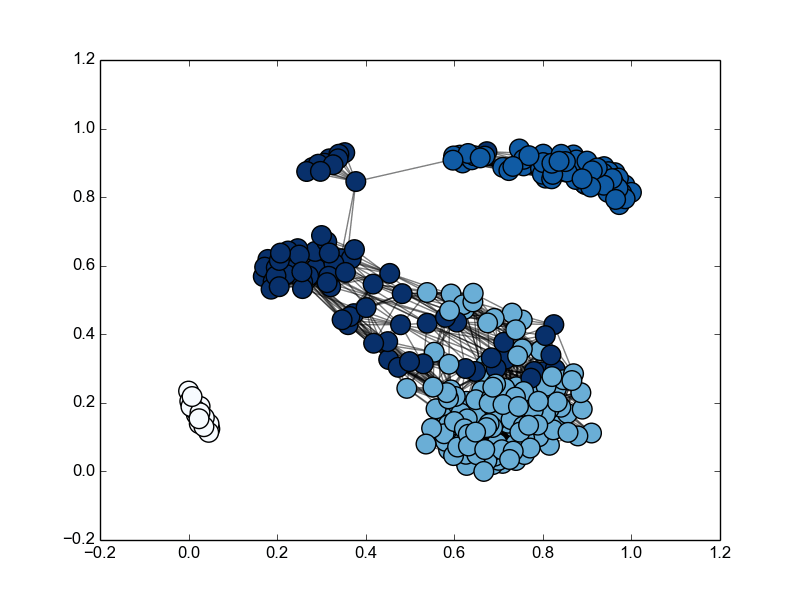

MCL algorithm
This module implements the Markov Cluster algorithm created by Stijn van Dongen and described in "Stijn van Dongen, Graph Clustering by Flow Simulation".
This implementation is still in beta and is not yet optimized for large networks.

Installation
python setup.py install
Usage
Command line
Usage: mcl_clustering.py [options] <input_matrix>
Options
-h, --help show this help message and exit
-e EXPAND_FACTOR, --expand_factor=EXPAND_FACTOR
expand factor (default: 2)
-i INFLATE_FACTOR, --inflate_factor=INFLATE_FACTOR
inflate factor (default: 2)
-m MULT_FACTOR, --mult_factor=MULT_FACTOR
multiply factor (default: 2)
-l MAX_LOOP, --max_loops=MAX_LOOP
max loops (default: 60)
-o FILE, --output=FILE
output (default: stdout)
-v, --verbose verbose (default: True)
-d, --draw-graph show graph with networkx (default: False)
The input matrix must be as comma-separated value file representing the adjacency matrix.
An example is the file example.csv in examples dir.
try: mcl_clustering.py -d -e 3 /example.csv
Code
Using numpy adjacency matrix
from mcl_clustering import mcl
A = <your matrix>
M, clusters = mcl(A, expand_factor = <expand_factor>,
inflate_factor = <inflate_factor>,
max_loop = <max_loop>,
mult_factor = <mult_factor>)
Using a networkx graph
from mcl_clustering import networkx_mcl
G = <your graph>
M, clusters = networkx_mcl(G, expand_factor = <expand_factor>,
inflate_factor = <inflate_factor>,
max_loop = <max_loop>,
mult_factor = <mult_factor>)
Output
M = otuput matrix
clusters = dict with keys = [<cluster id>] values = [<vertex id>]
Requirements
numpy
networkx
References
[1] Stijn van Dongen, Graph Clustering by Flow Simulation. PhD thesis, University of Utrecht, May 2000. ( http://www.library.uu.nl/digiarchief/dip/diss/1895620/inhoud.htm )
[2] Stijn van Dongen. A cluster algorithm for graphs. Technical Report INS-R0010, National Research Institute for Mathematics and Computer Science in the Netherlands, Amsterdam, May 2000. ( http://www.cwi.nl/ftp/CWIreports/INS/INS-R0010.ps.Z )
license
MIT